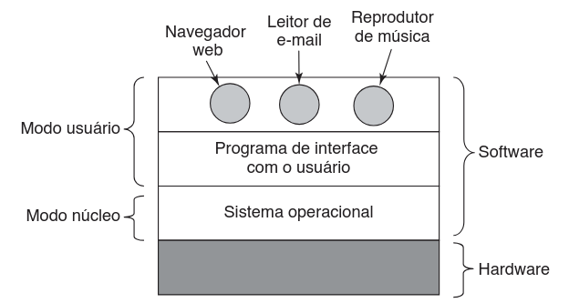
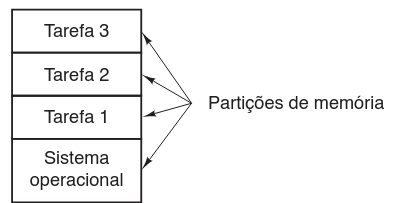
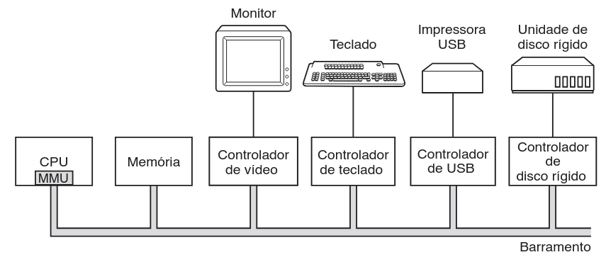
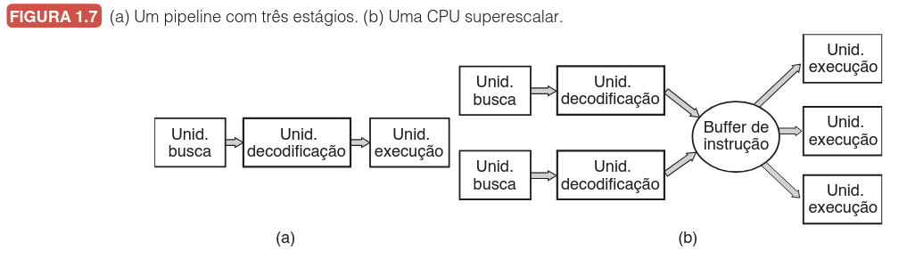
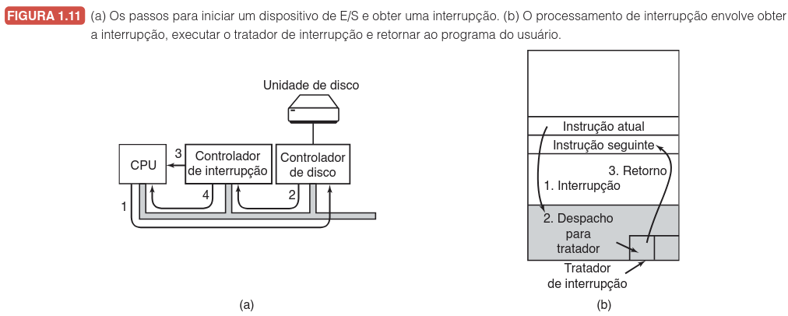

Introdução aos Sistemas Operacionais
O que é um sistema operacional?
Professor: Gabriel Soares Baptista
Introdução
O sistema operacional (SO) é uma camada de software vital entre o hardware e os programas aplicativos.
Funções Primordiais
- Abstração: Ocultar a complexidade do hardware.
- Gerenciamento: Controlar a alocação de recursos (processadores, memórias, dispositivos).

Níveis de Privilégio
Para garantir estabilidade e segurança, os computadores distinguem dois modos de operação:
| Modo |
Características |
| Modo Núcleo (Kernel) |
Acesso irrestrito a todo o hardware e instruções. Exclusivo do SO. |
| Modo Usuário |
Acesso limitado. Aplicativos (navegadores, editores) dependem do núcleo para operações críticas. |
A GUI (gráfica) ou Shell (linha de comando) não são o SO, mas programas de modo usuário que interagem com ele.
O SO como Máquina Estendida
A arquitetura em nível de máquina é primitiva e complexa (ex: drivers de disco SATA).
- Função: Transformar o "hardware feio" em abstrações "belas".
- Abstração Fundamental: O Arquivo.
- Permite ler/escrever sem saber sobre cabeçotes ou setores.
- Objetivo: Converter o impossível em gerenciável.
O SO como Gerenciador de Recursos
Visão bottom-up: O SO ordena e controla a alocação de processadores, memórias e dispositivos entre programas concorrentes.
Mecanismo de Multiplexação
| Tipo |
Definição |
Exemplo |
| No Tempo |
Revezamento sequencial do recurso. |
CPU: Um programa usa, depois outro. |
| No Espaço |
Divisão física simultânea. |
Memória: Dividida entre vários programas residentes. |
Evolução Histórica
1ª Geração (1945 - 1955)
- Tecnologia: Válvulas e Painéis de Ligações.
- Marco: ENIAC, Colossus.
- Linguagem: Nenhuma (conexão física de circuitos) ou Código de Máquina absoluto.
- SO: Inexistente.
- Processo: Reserva de horário, plugagem manual, cálculo numérico puro.
2ª Geração (1955 - 1965)
- Tecnologia: Transistores e Mainframes (IBM 7094).
- Inovação: Distinção entre operadores, programadores e pessoal de manutenção.
- Solução: Sistema em Lote (Batch System).
- Coleta: Leitura de cartões para fita (IBM 1401).
- Processamento: Execução sequencial (IBM 7094).
- Impressão: Saída da fita para papel.
3ª Geração (1965 - 1980)
- Tecnologia: Circuitos Integrados (CIs) e Família IBM System/360.
- Multiprogramação: Particionamento da memória para manter a CPU ocupada enquanto tarefas aguardam E/S.

- Spooling: Carregamento de tarefas do cartão para o disco, eliminando transporte de fitas.
- Timesharing: Compartilhamento de tempo para interação em tempo real (evolução do Multics -> UNIX).
4ª Geração (1980 - Presente)
- Tecnologia: LSI (Large Scale Integration) e Computadores Pessoais.
- Marcos:
- CP/M & MS-DOS: Era da linha de comando.
- GUI: Xerox PARC -> Apple Macintosh -> Microsoft Windows.
- Sistemas de Rede vs. Distribuídos:
- Rede: Usuário ciente das múltiplas máquinas.
- Distribuído: Transparência total (aparência de monoprocessador).
5ª Geração (1990 - Presente)
- Computação Móvel: Smartphones.
- Evolução:
- Symbian (Nokia) -> iOS (Apple) & Android (Google).
- Característica: Sensores, GPS, câmeras e conectividade constante.
| Período |
Sistema |
Impacto |
| 2007 |
iOS |
Interface de toque e foco no consumidor. |
| 2008 |
Android |
Aberto, baseado em Linux, ecossistema vasto. |
Questões de Fixação - 1 / 2
1. Sobre a localização e função do Sistema Operacional (SO), assinale a alternativa correta:
- A) O SO atua como uma camada interposta entre o hardware e os programas aplicativos, abstraindo a complexidade do sistema.
- B) O SO opera em Modo Usuário, garantindo que não haja interferência direta nos componentes eletrônicos.
- C) O SO é composto principalmente pelo Shell e pela GUI, que interagem diretamente com o hardware.
- D) A principal função do SO é eliminar a necessidade de memória RAM, gerenciando tudo via disco rígido.
2. No contexto de gerenciamento de dispositivos de E/S, o que é o "Spooling" mencionado na Terceira Geração?
- A) Uma técnica para dividir a memória em partições fixas.
- B) O processo de carregar tarefas de cartões para o disco assim que chegam, evitando o transporte manual de fitas.
- C) Um tipo de barramento serial usado para conectar impressoras.
- D) A alternância de threads em uma CPU multicore.
Questões de Fixação (Cont.)
3. Qual a diferença fundamental entre um Sistema Operacional de Rede e um Sistema Operacional Distribuído?
- A) No Sistema Distribuído, o usuário vê múltiplas máquinas como um único processador; no de Rede, o usuário está ciente das múltiplas máquinas.
- B) Sistemas de Rede não usam placas de interface, enquanto Distribuídos usam.
- C) Sistemas Distribuídos são usados apenas em smartphones, enquanto os de Rede são para Mainframes.
- D) Não há diferença, são sinônimos criados na Quarta Geração.
4. A "Estética da Abstração"
O texto menciona que o hardware é "feio" e o sistema operacional o torna "belo". Com base no exemplo do disco rígido e arquivos, explique o que essa metáfora significa do ponto de vista do programador.
Questões de Fixação (Relacione)
5. Relacione a Coluna A com a Coluna B.
| Coluna A |
Coluna B |
| (1) Modo Núcleo |
( ) Técnica onde o recurso é dividido fisicamente (uso simultâneo). |
| (2) Multiplexação no Tempo |
( ) Software que traduz comandos genéricos do SO em instruções específicas. |
| (3) Multiplexação no Espaço |
( ) Nível de privilégio exclusivo do SO com acesso irrestrito. |
| (4) Driver de Dispositivo |
( ) Revezamento sequencial do uso de um recurso (ex: CPU). |
| (5) Plug and Play |
( ) Sistema que coleta info de hardware e atribui recursos automaticamente. |
Revisão de Hardware
Arquitetura Básica
Modelo simplificado onde CPU, Memória e E/S se conectam via Barramento.

Processadores (CPU)
- Ciclo: Busca, Decodificação, Execução.
- Registradores Especiais:
- PC (Program Counter): Próxima instrução.
- SP (Stack Pointer): Topo da pilha.
- PSW: Estado do programa e modo (Núcleo/Usuário).
- Evolução:
- Pipeline: Execução em estágios simultâneos.
- Superescalar: Múltiplas unidades de execução.

Memória
Hierarquia essencial para equilibrar custo, capacidade e velocidade.
- Registradores: Na CPU, imediatos.
- Cache (L1, L2, L3): Alta velocidade, armazena linhas usadas recentemente.
- Memória Principal (RAM): Volátil, onde residem programas.
- Disco: Armazenamento massivo, lento.
Discos Rígidos
Dispositivos mecânicos com alta latência em comparação à eletrônica.
- Estrutura: Pratos, Trilhas, Cilindros, Setores.
- Atrasos:
- Seek (Busca): Mover braço até o cilindro.
- Latência Rotacional: Setor girar até a cabeça.
- SSDs: Sem partes móveis, baseados em Flash.
Entrada e Saída (E/S)
- Controlador: Chip físico que controla o dispositivo.
- Driver: Software que traduz comandos do SO para o controlador.
- Mecanismo de Interrupção: Fundamental para evitar desperdício de CPU.

Inicialização (Boot)
Sequência orquestrada de eventos:
- BIOS: Software na ROM/Flash. Executa o POST (Power-On Self Test).
- Boot Sequence: Consulta a CMOS para ordem de boot (USB, Disco, etc).
- MBR/Loader: Lê o primeiro setor do disco e carrega o núcleo do SO.
- SO: Consulta BIOS, carrega drivers, inicia processos e interface.
Questões de Fixação - 2 / 2
6. Sobre a hierarquia de memória, qual é a principal função da Memória Cache (L1, L2)?
- A) Armazenar o BIOS e as configurações de inicialização permanentemente.
- B) Substituir o disco rígido para armazenamento de arquivos grandes.
- C) Atuar como intermediário de alta velocidade entre a CPU e a RAM, armazenando dados acessados recentemente.
- D) Converter endereços virtuais em endereços físicos através da MMU.
7. Coloque os eventos abaixo na ordem cronológica correta que ocorre durante a inicialização (boot).
- ( ) O carregador de inicialização (bootloader) lê o SO da partição ativa e o inicia.
- ( ) O BIOS verifica a quantidade de RAM e se o teclado está respondendo.
- ( ) O SO consulta o BIOS para obter a configuração de hardware e carregar os drivers.
- ( ) O BIOS varre os barramentos PCIe/PCI para detectar novos dispositivos.
- ( ) O BIOS consulta a memória CMOS para determinar a ordem de boot.
Questões de Fixação (Análise)
8. Classifique como Verdadeiras (V) ou Falsas (F):
- ( ) A interface gráfica (GUI) e o Shell são partes integrantes do núcleo (kernel).
- ( ) Em um disco magnético, o tempo de busca (seek) refere-se ao tempo que o setor leva para girar até a cabeça.
- ( ) A multiprogramação surgiu na 3ª geração para resolver a ociosidade da CPU durante E/S.
- ( ) O BIOS é responsável por carregar o sistema operacional inteiro para a RAM.
- ( ) Hyperthreading permite que uma única CPU execute fisicamente duas instruções ao mesmo tempo (paralelismo real).
9. Gerenciamento de E/S:
Por que o método de E/S utilizando interrupções é considerado mais eficiente do que o método de espera ocupada (busy wait)?
Questões de Fixação (Aprofundamento)
10. Arquitetura de Barramentos.
Explique a diferença arquitetural fundamental entre o antigo barramento PCI e o moderno PCIe (PCI Express).
11. O Dilema do Cache.
Se a memória Cache (L1/L2) é tão rápida (cerca de 2 ciclos de CPU), por que não construímos computadores inteiros usando apenas esse tipo de memória, eliminando a RAM e o Disco?
Próximos Passos
No próximo capítulo, Conceitos e Estruturas de Sistemas Operacionais:
- Exploraremos o "Zoológico dos Sistemas Operacionais" (Mainframes a Smartcards).
- Definiremos abstrações fundamentais: Processos, Arquivos e Chamadas de Sistema.
- Analisaremos arquiteturas: Monolíticos, Micronúcleos e Máquinas Virtuais.